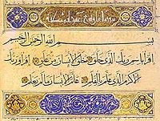
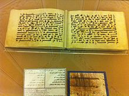
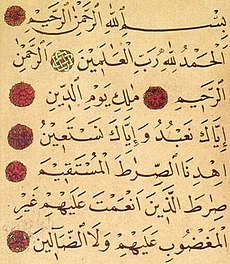
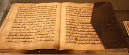
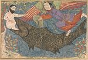
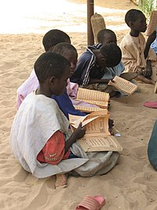
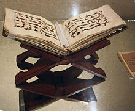
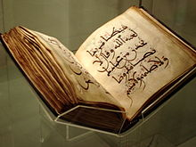
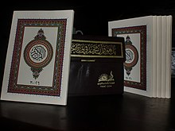
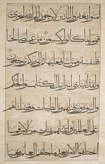

Quran

From Wikipedia, the free encyclopedia
This article is about the central religious text of Islam. For other uses, see Quran (disambiguation).|
The Quran
القرآن |
|
|---|---|

|
|
| Information | |
| Religion | Islam |
| Language | Classical Arabic |
| Period | 610–632 CE |
| Chapters | 114 (list) |
| Quran |
|---|

|
|
Divisions [Show] |
|
Content [Show] |
|
Characteristics [Show] |
|
Related [Show] |
The Quran (/kʊˈrɑːn/, kor-AHN;[i] Arabic: القرآن, romanized: al-Qurʼān, lit. 'the recitation', Arabic pronunciation: [alqurˈʔaːn][ii]) (also romanized Qur'an or Koran,[iii]) is the central religious text of Islam, believed by Muslims to be a revelation from God (Allah).[11] It is widely regarded as the finest work in classical Arabic literature.[12][13][iv][v] It is organized in 114 chapters (surah (سور; singular: سورة, sūrah)), which consist of verses (āyāt (آيات; singular: آية, āyah)).
Muslims believe that the Quran was orally revealed by God to the final prophet, Muhammad, through the archangel Gabriel (Jibril),[16][17] incrementally over a period of some 23 years, beginning in the month of Ramadan,[18] when Muhammad was 40; and concluding in 632, the year of his death.[11][19][20] Muslims regard the Quran as Muhammad's most important miracle; a proof of his prophethood;[21] and the culmination of a series of divine messages starting with those revealed to Adam, including the Tawrah (Torah), the Zabur ("Psalms") and the Injil ("Gospel"). The word Quran occurs some 70 times in the text itself, and other names and words are also said to refer to the Quran.[22]
The Quran is thought by Muslims to be not simply divinely inspired, but the literal word of God.[23] Muhammad did not write it as he did not know how to write. According to tradition, several of Muhammad's companions served as scribes, recording the revelations.[24] Shortly after the prophet's death, the Quran was compiled by the companions, who had written down or memorized parts of it.[25] Caliph Uthman established a standard version, now known as the Uthmanic codex, which is generally considered the archetype of the Quran known today. There are, however, variant readings, with mostly minor differences in meaning.[24]
The Quran assumes familiarity with major narratives recounted in the Biblical and apocryphal scriptures. It summarizes some, dwells at length on others and, in some cases, presents alternative accounts and interpretations of events.[26][27] The Quran describes itself as a book of guidance for mankind (2:185). It sometimes offers detailed accounts of specific historical events, and it often emphasizes the moral significance of an event over its narrative sequence.[28] Supplementing the Quran with explanations for some cryptic Quranic narratives, and rulings that also provide the basis for sharia (Islamic law) in most denominations of Islam,[29][vi] are hadiths—oral and written traditions believed to describe words and actions of Muhammad.[vii][29] During prayers, the Quran is recited only in Arabic.[30]
Someone who has memorized the entire Quran is called a hafiz ('memorizer'). An ayah (Quranic verse) is sometimes recited with a special kind of elocution reserved for this purpose, called tajwid. During the month of Ramadan, Muslims typically complete the recitation of the whole Quran during tarawih prayers. In order to extrapolate the meaning of a particular Quranic verse, Muslims rely on exegesis, or commentary (tafsir), rather than a direct translation of the text.[31]
|
Contents [hide] |
|---|
Etymology and meaning
The word qurʼān appears about 70 times in the Quran itself, assuming various meanings. It is a verbal noun (maṣdar) of the Arabic verb qaraʼa (قرأ) meaning 'he read' or 'he recited'. The Syriac equivalent is qeryānā (ܩܪܝܢܐ), which refers to 'scripture reading' or 'lesson'.[32] While some Western scholars consider the word to be derived from the Syriac, the majority of Muslim authorities hold the origin of the word is qaraʼa itself.[11] Regardless, it had become an Arabic term by Muhammad's lifetime.[11] An important meaning of the word is the 'act of reciting', as reflected in an early Quranic passage: "It is for Us to collect it and to recite it (qurʼānahu)."[33]
In other verses, the word refers to 'an individual passage recited [by Muhammad]'. Its liturgical context is seen in a number of passages, for example: "So when al-qurʼān is recited, listen to it and keep silent."[34] The word may also assume the meaning of a codified scripture when mentioned with other scriptures such as the Torah and Gospel.[35]
The term also has closely related synonyms that are employed throughout the Quran. Each synonym possesses its own distinct meaning, but its use may converge with that of qurʼān in certain contexts. Such terms include kitāb ('book'), āyah ('sign'), and sūrah ('scripture'); the latter two terms also denote units of revelation. In the large majority of contexts, usually with a definite article (al-), the word is referred to as the waḥy ('revelation'), that which has been "sent down" (tanzīl) at intervals.[36][37] Other related words include: dhikr ('remembrance'), used to refer to the Quran in the sense of a reminder and warning; and ḥikmah ('wisdom'), sometimes referring to the revelation or part of it.[11][viii]
The Quran describes itself as "the discernment" (al-furqān), "the mother book" (umm al-kitāb), "the guide" (huda), "the wisdom" (hikmah), "the remembrance" (dhikr), and "the revelation" (tanzīl; something sent down, signifying the descent of an object from a higher place to lower place).[38] Another term is al-kitāb ('The Book'), though it is also used in the Arabic language for other scriptures, such as the Torah and the Gospels. The term mus'haf ('written work') is often used to refer to particular Quranic manuscripts but is also used in the Quran to identify earlier revealed books.[11]
History
Main article: History of the Quran
Prophetic era
Islamic tradition relates that Muhammad received his first revelation in the Cave of Hira during one of his isolated retreats to the mountains. Thereafter, he received revelations over a period of 23 years. According to hadith and Muslim history, after Muhammad immigrated to Medina and formed an independent Muslim community, he ordered many of his companions to recite the Quran and to learn and teach the laws, which were revealed daily. It is related that some of the Quraysh who were taken prisoners at the Battle of Badr regained their freedom after they had taught some of the Muslims the simple writing of the time. Thus a group of Muslims gradually became literate. As it was initially spoken, the Quran was recorded on tablets, bones, and the wide, flat ends of date palm fronds. Most suras were in use amongst early Muslims since they are mentioned in numerous sayings by both Sunni and Shia sources, relating Muhammad's use of the Quran as a call to Islam, the making of prayer and the manner of recitation. However, the Quran did not exist in book form at the time of Muhammad's death in 632.[39][40][41] There is agreement among scholars that Muhammad himself did not write down the revelation.[42]
Sahih al-Bukhari narrates Muhammad describing the revelations as, "Sometimes it is (revealed) like the ringing of a bell" and Aisha reported, "I saw the Prophet being inspired Divinely on a very cold day and noticed the sweat dropping from his forehead (as the Inspiration was over)."[ix] Muhammad's first revelation, according to the Quran, was accompanied with a vision. The agent of revelation is mentioned as the "one mighty in power,"[44] the one who "grew clear to view when he was on the uppermost horizon. Then he drew nigh and came down till he was (distant) two bows' length or even nearer."[40][45] The Islamic studies scholar Welch states in the Encyclopaedia of Islam that he believes the graphic descriptions of Muhammad's condition at these moments may be regarded as genuine, because he was severely disturbed after these revelations. According to Welch, these seizures would have been seen by those around him as convincing evidence for the superhuman origin of Muhammad's inspirations. However, Muhammad's critics accused him of being a possessed man, a soothsayer or a magician since his experiences were similar to those claimed by such figures well known in ancient Arabia. Welch additionally states that it remains uncertain whether these experiences occurred before or after Muhammad's initial claim of prophethood.[46]
|  |
|---|
|
Muhammad's first revelation, Surah Al-Alaq, later placed 96th in the Qur'anic regulations, in current writing style |
The Quran describes Muhammad as "ummi,"[47] which is traditionally interpreted as 'illiterate', but the meaning is rather more complex. Medieval commentators such as Al-Tabari maintained that the term induced two meanings: first, the inability to read or write in general; second, the inexperience or ignorance of the previous books or scriptures, (but they gave priority to the first meaning). Muhammad's illiteracy was taken as a sign of the genuineness of his prophethood. For example, according to Fakhr al-Din al-Razi, if Muhammad had mastered writing and reading he possibly would have been suspected of having studied the books of the ancestors. Some scholars such as Watt prefer the second meaning of ummi—they take it to indicate unfamiliarity with earlier sacred texts.[40][48]
The final verse of the Quran was revealed on the 18th of the Islamic month of Dhu al-Hijjah in the year 10 A.H., a date that roughly corresponds to February or March 632. The verse was revealed after the Prophet finished delivering his sermon at Ghadir Khumm.
Compilation and preservation
See also: History of the Quran and Birmingham Quran manuscriptFollowing Muhammad's death in 632, a number of his companions who knew the Quran by heart were killed in the Battle of Yamama by Musaylimah. The first caliph, Abu Bakr (d. 634), subsequently decided to collect the book in one volume so that it could be preserved. Zayd ibn Thabit (d. 655) was the person to collect the Quran since "he used to write the Divine Inspiration for Allah's Apostle". Thus, a group of scribes, most importantly Zayd, collected the verses and produced a hand-written manuscript of the complete book. The manuscript according to Zayd remained with Abu Bakr until he died. Zayd's reaction to the task and the difficulties in collecting the Quranic material from parchments, palm-leaf stalks, thin stones (collectively known as suhuf)[49] and from men who knew it by heart is recorded in earlier narratives. After Abu Bakr, in 644, Hafsa bint Umar, Muhammad's widow, was entrusted with the manuscript until the third caliph, Uthman ibn Affan, requested the standard copy from Hafsa bint Umar in about 650.[50]
In about 650, the third Caliph Uthman ibn Affan (d. 656) began noticing slight differences in pronunciation of the Quran as Islam expanded beyond the Arabian Peninsula into Persia, the Levant, and North Africa. In order to preserve the sanctity of the text, he ordered a committee headed by Zayd to use Abu Bakr's copy and prepare a standard copy of the Quran.[39][51] Thus, within 20 years of Muhammad's death, the Quran was committed to written form. That text became the model from which copies were made and promulgated throughout the urban centers of the Muslim world, and other versions are believed to have been destroyed.[39][52][53][54] The present form of the Quran text is accepted by Muslim scholars to be the original version compiled by Abu Bakr.[40][41][x]
|  |
|---|
According to Shia, Ali ibn Abi Talib (d. 661) compiled a complete version of the Quran shortly after Muhammad's death. The order of this text differed from that gathered later during Uthman's era in that this version had been collected in chronological order. Despite this, he made no objection against the standardized Quran and accepted the Quran in circulation. Other personal copies of the Quran might have existed including Ibn Mas'ud's and Ubay ibn Ka'b's codex, none of which exist today.[11][39][56]
The Quran most likely existed in scattered written form during Muhammad's lifetime. Several sources indicate that during Muhammad's lifetime a large number of his companions had memorized the revelations. Early commentaries and Islamic historical sources support the above-mentioned understanding of the Quran's early development.[25] University of Chicago professor Fred Donner states that:[57]
[T]here was a very early attempt to establish a uniform consonantal text of the Qurʾān from what was probably a wider and more varied group of related texts in early transmission.… After the creation of this standardized canonical text, earlier authoritative texts were suppressed, and all extant manuscripts—despite their numerous variants—seem to date to a time after this standard consonantal text was established.
Although most variant readings of the text of the Quran have ceased to be transmitted, some still are.[58][59] There has been no critical text produced on which a scholarly reconstruction of the Quranic text could be based.[xi] Historically, controversy over the Quran's content has rarely become an issue, although debates continue on the subject.[61][xii]

|
|---|
|
The right page of the Stanford '07 binary manuscript. The upper layer is verses 265-271 of the surah Bakara. The double-layer reveals the additions made on the first text of the Quran and the differences with today's Koran. |
In 1972, in a mosque in the city of Sana'a, Yemen, manuscripts were discovered that were later proved to be the most ancient Quranic text known to exist at the time. The Sana'a manuscripts contain palimpsests, a manuscript page from which the text has been washed off to make the parchment reusable again—a practice which was common in ancient times due to scarcity of writing material. However, the faint washed-off underlying text (scriptio inferior) is still barely visible and believed to be "pre-Uthmanic" Quranic content, while the text written on top (scriptio superior) is believed to belong to Uthmanic time.[62] Studies using radiocarbon dating indicate that the parchments are dated to the period before 671 CE with a 99 percent probability.[63][64] The German scholar Gerd R. Puin has been investigating these Quran fragments for years. His research team made 35,000 microfilm photographs of the manuscripts, which he dated to early part of the 8th century. Puin has not published the entirety of his work, but noted unconventional verse orderings, minor textual variations, and rare styles of orthography. He also suggested that some of the parchments were palimpsests which had been reused. Puin believed that this implied an evolving text as opposed to a fixed one.[65]
In 2015, fragments of a very early Quran, dating back to 1370 years earlier, were discovered in the library of the University of Birmingham, England. According to the tests carried out by the Oxford University Radiocarbon Accelerator Unit, "with a probability of more than 95%, the parchment was from between 568 and 645". The manuscript is written in Hijazi script, an early form of written Arabic.[66] This is possibly the earliest extant exemplar of the Quran, but as the tests allow a range of possible dates, it cannot be said with certainty which of the existing versions is the oldest.[66] Saudi scholar Saud al-Sarhan has expressed doubt over the age of the fragments as they contain dots and chapter separators that are believed to have originated later.[67] However Joseph E. B. Lumbard of Brandeis University has written in the Huffington Post in support of the dates proposed by the Birmingham scholars. Lumbard notes that the discovery of a Quranic text that may be confirmed by radiocarbon dating as having been written in the first decades of the Islamic era, while presenting a text substantially in conformity with that traditionally accepted, reinforces a growing academic consensus that many Western skeptical and 'revisionist' theories of Quranic origins are now untenable in the light of empirical findings—whereas, on the other hand, counterpart accounts of Quranic origins within classical Islamic traditions stand up well in the light of ongoing scientific discoveries.[68]
Significance in Islam
| Part of a series on |
| Islam |
|---|

|
|
Quran . Sunnah (Hadith, Sirah) |
 Islam portal Islam portal
|
Muslims believe the Quran to be God's final revelation to humanity, a work of divine guidance revealed to Muhammad through the angel Gabriel.[19][69]
Revered by pious Muslims as "the holy of holies,"[70] whose sound moves some to "tears and ecstasy",[71] it is the physical symbol of the faith, the text often used as a charm on occasions of birth, death, marriage.[citation needed] Consequently,
It must never rest beneath other books, but always on top of them, one must never drink or smoke when it is being read aloud, and it must be listened to in silence. It is a talisman against disease and disaster.[70][72]
Traditionally great emphasis was put on children memorizing the 6200+ verses of the Quran, those succeeding being honored with the title Hafiz. "Millions and millions" of Muslims "refer to the Koran daily to explain their actions and to justify their aspirations,"[xiii] and in recent years many consider it the source of scientific knowledge.[74][75]
Revelation in Islamic and Quranic contexts means the act of God addressing an individual, conveying a message for a greater number of recipients. The process by which the divine message comes to the heart of a messenger of God is tanzil (to send down) or nuzūl (to come down). As the Quran says, "With the truth we (God) have sent it down and with the truth it has come down."[76]
The Quran frequently asserts in its text that it is divinely ordained. Some verses in the Quran seem to imply that even those who do not speak Arabic would understand the Quran if it were recited to them.[77] The Quran refers to a written pre-text, "the preserved tablet," that records God's speech even before it was sent down.[78][79]
Muslims believe that the present wording of the Quran corresponds to that revealed to Muhammad, and according to their interpretation of Quran 15:9, it is protected from corruption ("Indeed, it is We who sent down the Quran and indeed, We will be its guardian.").[80] Muslims consider the Quran to be a guide, a sign of the prophethood of Muhammad and the truth of the religion.
The Shīa believe that the Quran was gathered and compiled by Muhammad during his lifetime, rather than being compiled by Uthman ibn Affan. There are other differences in the way Shias interpret the text.[81] Muslims do not agree over whether the Quran was created by God or is eternal and "uncreated." Sunnis (who make up about 85-90% of Muslims) hold that the Quran is uncreated—a doctrine that has been unchallenged among them for many centuries. Shia Twelvers and Zaydi, and the Kharijites—believe the Quran was created.[82] Sufi philosophers view the question as artificial or wrongly framed.[83][need quotation to verify]
Inimitability
Main article: I'jazInimitability of the Quran (or "I'jaz") is the belief that no human speech can match the Quran in its content and form. The Quran is considered an inimitable miracle by Muslims, effective until the Day of Resurrection—and, thereby, the central proof granted to Muhammad in authentication of his prophetic status. The concept of inimitability originates in the Quran where in five different verses opponents are challenged to produce something like the Quran: "If men and jinn banded together to produce the like of this Quran they would never produce its like not though they backed one another."[84] From the ninth century, numerous works appeared which studied the Quran and examined its style and content. Medieval Muslim scholars including al-Jurjani (d. 1078) and al-Baqillani (d. 1013) have written treatises on the subject, discussed its various aspects, and used linguistic approaches to study the Quran. Others argue that the Quran contains noble ideas, has inner meanings, maintained its freshness through the ages and has caused great transformations at the individual level and in history. Some scholars state that the Quran contains scientific information that agrees with modern science. The doctrine of the miraculousness of the Quran is further emphasized by Muhammad's illiteracy since the unlettered prophet could not have been suspected of composing the Quran.[56][85]
In worship
See also: Salah
|
While standing in prayers, |
The first surah of the Quran is repeated in daily prayers and on other occasions. This surah, which consists of seven verses, is the most often recited surah of the Quran:[11]
|
بِسْمِ ٱللَّهِ ٱلرَّحْمَٰنِ ٱلرَّحِيمِ |
In the Name of Allah the Entirely Merciful, the Especially Merciful. |
| —Quran 1:1–7 | —Sahih International English translation |
Other sections of the Quran of choice are also read in daily prayers.
Respect for the written text of the Quran is an important element of religious faith by many Muslims, and the Quran is treated with reverence. Based on tradition and a literal interpretation of Quran 56:79 ("none shall touch but those who are clean"), some Muslims believe that they must perform a ritual cleansing with water (Wudu or Ghusl) before touching a copy of the Quran, although this view is not universal.[11] Worn-out copies of the Quran are wrapped in a cloth and stored indefinitely in a safe place, buried in a mosque or a Muslim cemetery, or burned and the ashes buried or scattered over water.[86]
In Islam, most intellectual disciplines, including Islamic theology, philosophy, mysticism and jurisprudence, have been concerned with the Quran or have their foundation in its teachings.[11] Muslims believe that the preaching or reading of the Quran is rewarded with divine rewards variously called ajr, thawab, or hasanat.[87]
In Islamic art
The Quran also inspired Islamic arts and specifically the so-called Quranic arts of calligraphy and illumination.[11] The Quran is never decorated with figurative images, but many Qurans have been highly decorated with decorative patterns in the margins of the page, or between the lines or at the start of suras. Islamic verses appear in many other media, on buildings and on objects of all sizes, such as mosque lamps, metal work, pottery and single pages of calligraphy for muraqqas or albums.
Calligraphy, 18th century. Brooklyn Museum.
Quranic inscriptions, Bara Gumbad mosque, Delhi, India.
Typical mosque lamp, of enamelled glass, with the Ayat an-Nur or "Verse of Light" (24:35).
Quranic verses, Shahizinda mausoleum, Samarkand, Uzbekistan.
Quran page decoration art, Ottoman period.
The leaves from this Quran written in gold and contoured with brown ink have a horizontal format. This is admirably suited to classical Kufic calligraphy, which became common under the early Abbasid caliphs.
Quranic inscriptions, Bara Gumbad mosque, Delhi, India.
Text and arrangement
|  |
|---|
|
First sura of the Quran, Al-Fatiha, consisting of seven verses. |
The Quran consists of 114 chapters of varying lengths, each known as a sūrah. Chapters are classified as Meccan or Medinan, depending on whether the verses were revealed before or after the migration of Muhammad to the city of Medina. However, a sūrah classified as Medinan may contain Meccan verses in it and vice versa. Sūrah titles are derived from a name or quality discussed in the text, or from the first letters or words of the sūrah. Chapters are not arranged in chronological order, rather the chapters appear to be arranged roughly in order of decreasing size. Some scholars argue the sūrahs are arranged according to a certain pattern.[88] Each sūrah except the ninth starts with the Bismillah (بسم الله الرحمن الرحيم), an Arabic phrase meaning "In the name of God." There are, however, still 114 occurrences of the Bismillah in the Quran, due to its presence in Quran 27:30 as the opening of Solomon's letter to the Queen of Sheba.[89]
Each sūrah consists of several verses, known as āyāt, which originally means a "sign" or "evidence" sent by God. The number of verses differs from sūrah to sūrah. An individual verse may be just a few letters or several lines. The total number of verses in the most popular Hafs Quran is 6,236;[xiv] however, the number varies if the bismillahs are counted separately.
In addition to and independent of the division into chapters, there are various ways of dividing the Quran into parts of approximately equal length for convenience in reading. The 30 juz' (plural ajzāʼ) can be used to read through the entire Quran in a month. Some of these parts are known by names—which are the first few words by which the juzʼ begins. A juz' is sometimes further divided into two ḥizb (plural aḥzāb), and each hizb subdivided into four rubʻ al-ahzab. The Quran is also divided into seven approximately equal parts, manzil (plural manāzil), for it to be recited in a week.[11]
A different structure is provided by semantic units resembling paragraphs and comprising roughly ten āyāt each. Such a section is called a rukū`.
The Muqattaʿat (Arabic: حروف مقطعات, ḥurūf muqaṭṭaʿāt, 'disjoined letters, disconnected letters';[92] also 'mysterious letters')[93] are combinations of between one and five Arabic letters figuring at the beginning of 29 out of the 114 chapters of the Quran just after the basmala.[93] The letters are also known as fawātih (فواتح), or 'openers', as they form the opening verse of their respective suras. Four surahs are named for their muqatta'at: Ṭāʾ-Hāʾ, Yāʾ-Sīn, Ṣād, and Qāf. The original significance of the letters is unknown. Tafsir (exegesis) has interpreted them as abbreviations for either names or qualities of God or for the names or content of the respective surahs. According to Rashad Khalifa, those letters are Quranic initials for a hypothetical mathematical code in the Quran, namely the Quran code or known as Code 19.[94]
According to one estimate the Quran consists of 77,430 words, 18,994 unique words, 12,183 stems, 3,382 lemmas and 1,685 roots.[95]
Contents
Main articles: God in Islam, Prophets and messengers in Islam, Islamic attitudes towards science, Biblical and Quranic narratives and Historical reliability of the Quran
The Quranic content is concerned with basic Islamic beliefs including the existence of God and the resurrection. Narratives of the early prophets, ethical and legal subjects, historical events of Muhammad's time, charity and prayer also appear in the Quran. The Quranic verses contain general exhortations regarding right and wrong and historical events are related to outline general moral lessons. Verses pertaining to natural phenomena have been interpreted by Muslims as an indication of the authenticity of the Quranic message.[96] The style of the Quran has been called "allusive," with commentaries needed to explain what is being referred to—"events are referred to, but not narrated; disagreements are debated without being explained; people and places are mentioned, but rarely named."[97]
Monotheism
The central theme of the Quran is monotheism. God is depicted as living, eternal, omniscient and omnipotent (see, e.g., Quran 2:20, 2:29, 2:255). God's omnipotence appears above all in his power to create. He is the creator of everything, of the heavens and the earth and what is between them (see, e.g., Quran 13:16, 2:253, 50:38, etc.). All human beings are equal in their utter dependence upon God, and their well-being depends upon their acknowledging that fact and living accordingly.[40][96]
|  |
|---|
|
A 12th-century Quran manuscript at Reza Abbasi Museum. |
The Quran uses cosmological and contingency arguments in various verses without referring to the terms to prove the existence of God. Therefore, the universe is originated and needs an originator, and whatever exists must have a sufficient cause for its existence. Besides, the design of the universe is frequently referred to as a point of contemplation: "It is He who has created seven heavens in harmony. You cannot see any fault in God's creation; then look again: Can you see any flaw?"[98][99]
Eschatology
Main articles: Islamic eschatologyThe doctrine of the last day and eschatology (the final fate of the universe) may be considered the second great doctrine of the Quran.[40] It is estimated that approximately one-third of the Quran is eschatological, dealing with the afterlife in the next world and with the day of judgment at the end of time.[100] There is a reference to the afterlife on most pages of the Quran and belief in the afterlife is often referred to in conjunction with belief in God as in the common expression: "Believe in God and the last day."[101] A number of suras such as 44, 56, 75, 78, 81 and 101 are directly related to the afterlife and its preparations. Some suras indicate the closeness of the event and warn people to be prepared for the imminent day. For instance, the first verses of Sura 22, which deal with the mighty earthquake and the situations of people on that day, represent this style of divine address: "O People! Be respectful to your Lord. The earthquake of the Hour is a mighty thing."[102]
The Quran is often vivid in its depiction of what will happen at the end time. Watt describes the Quranic view of End Time:[40]
The climax of history, when the present world comes to an end, is referred to in various ways. It is 'the Day of Judgment,' 'the Last Day,' 'the Day of Resurrection,' or simply 'the Hour.' Less frequently it is 'the Day of Distinction' (when the good are separated from the evil), 'the Day of the Gathering' (of men to the presence of God) or 'the Day of the Meeting' (of men with God). The Hour comes suddenly. It is heralded by a shout, by a thunderclap, or by the blast of a trumpet. A cosmic upheaval then takes place. The mountains dissolve into dust, the seas boil up, the sun is darkened, the stars fall and the sky is rolled up. God appears as Judge, but his presence is hinted at rather than described.… The central interest, of course, is in the gathering of all mankind before the Judge. Human beings of all ages, restored to life, join the throng. To the scoffing objection of the unbelievers that former generations had been dead a long time and were now dust and mouldering bones, the reply is that God is nevertheless able to restore them to life.
The Quran does not assert a natural immortality of the human soul, since man's existence is dependent on the will of God: when he wills, he causes man to die; and when he wills, he raises him to life again in a bodily resurrection.[103]
Prophets
|  |
|---|
|
Jonah and fish (miniature). As described in the Book of Jonah, he was thrown from the ship in the Mediterranean sea, swallowed by fish and thrown ashore in Nineveh, Yunus legend is repeated in the Quran. |
According to the Quran, God communicated with man and made his will known through signs and revelations. Prophets, or 'Messengers of God', received revelations and delivered them to humanity. The message has been identical and for all humankind. "Nothing is said to you that was not said to the messengers before you, that your lord has at his Command forgiveness as well as a most Grievous Penalty."[104] The revelation does not come directly from God to the prophets. Angels acting as God's messengers deliver the divine revelation to them. This comes out in Quran 42:51, in which it is stated: "It is not for any mortal that God should speak to them, except by revelation, or from behind a veil, or by sending a messenger to reveal by his permission whatsoever He will.">[52][103]
Ethico-religious concepts
Belief is a fundamental aspect of morality in the Quran, and scholars have tried to determine the semantic contents of "belief" and "believer" in the Quran.[105] The ethico-legal concepts and exhortations dealing with righteous conduct are linked to a profound awareness of God, thereby emphasizing the importance of faith, accountability, and the belief in each human's ultimate encounter with God. People are invited to perform acts of charity, especially for the needy. Believers who "spend of their wealth by night and by day, in secret and in public" are promised that they "shall have their reward with their Lord; on them shall be no fear, nor shall they grieve."[106] It also affirms family life by legislating on matters of marriage, divorce, and inheritance. A number of practices, such as usury and gambling, are prohibited. The Quran is one of the fundamental sources of Islamic law (sharia). Some formal religious practices receive significant attention in the Quran including the formal prayers (salat) and fasting in the month of Ramadan. As for the manner in which the prayer is to be conducted, the Quran refers to prostration.[25][103] The term for charity, zakat, literally means purification. Charity, according to the Quran, is a means of self-purification.[78][107]
Encouragement for the sciences
The astrophysicist Nidhal Guessoum, while being highly critical of pseudo-scientific claims made about the Quran, has highlighted the encouragement for sciences that the Quran provides by developing "the concept of knowledge." He writes:[108]:174
The Qur'an draws attention to the danger of conjecturing without evidence (And follow not that of which you have not the (certain) knowledge of... 17:36) and in several different verses asks Muslims to require proofs (Say: Bring your proof if you are truthful 2:111), both in matters of theological belief and in natural science.
Guessoum cites Ghaleb Hasan on the definition of "proof" according to the Quran being "clear and strong... convincing evidence or argument." Also, such a proof cannot rely on an argument from authority, citing verse 5:104. Lastly, both assertions and rejections require a proof, according to verse 4:174.[108]:56 Ismail al-Faruqi and Taha Jabir Alalwani are of the view that any reawakening of the Muslim civilization must start with the Quran; however, the biggest obstacle on this route is the "centuries old heritage of tafseer (exegesis) and other classical disciplines" which inhibit a "universal, epidemiological and systematic conception" of the Quran's message.[108]:117–8 The philosopher Muhammad Iqbal, considered the Quran's methodology and epistemology to be empirical and rational.[108]:58–9
There are around 750 verses[which?] in the Quran dealing with natural phenomena. In many of these verses the study of nature is "encouraged and highly recommended", and historical Islamic scientists like Al-Biruni and Al-Battani derived their inspiration from verses of the Quran.[additional citation(s) needed] Mohammad Hashim Kamali has stated that "scientific observation, experimental knowledge and rationality" are the primary tools with which humanity can achieve the goals laid out for it in the Quran.[108]:63 Ziauddin Sardar built a case for Muslims having developed the foundations of modern science, by highlighting the repeated calls of the Quran to observe and reflect upon natural phenomenon.[108]:75
The physicist Abdus Salam, in his Nobel Prize banquet address, quoted a well known verse from the Quran (67:3–4) and then stated: "This in effect is the faith of all physicists: the deeper we seek, the more is our wonder excited, the more is the dazzlement of our gaze."[108]:131 One of Salam's core beliefs was that there is no contradiction between Islam and the discoveries that science allows humanity to make about nature and the universe. Salam also held the opinion that the Quran and the Islamic spirit of study and rational reflection was the source of extraordinary civilizational development.[108]:132 Salam highlights, in particular, the work of Ibn al-Haytham and Al-Biruni as the pioneers of empiricism who introduced the experimental approach, breaking with Aristotle's influence and thus giving birth to modern science. Salam was also careful to differentiate between metaphysics and physics, and advised against empirically probing certain matters on which "physics is silent and will remain so," such as the doctrine of "creation from nothing" which in Salam's view is outside the limits of science and thus "gives way" to religious considerations.[108]:134
Literary style
|  |
|---|
|
Boys studying Quran, Touba, |
The Quran's message is conveyed with various literary structures and devices. In the original Arabic, the suras and verses employ phonetic and thematic structures that assist the audience's efforts to recall the message of the text. Muslims[who?] assert (according to the Quran itself) that the Quranic content and style is inimitable.[109]
The language of the Quran has been described as "rhymed prose" as it partakes of both poetry and prose; however, this description runs the risk of failing to convey the rhythmic quality of Quranic language, which is more poetic in some parts and more prose-like in others. Rhyme, while found throughout the Quran, is conspicuous in many of the earlier Meccan suras, in which relatively short verses throw the rhyming words into prominence. The effectiveness of such a form is evident for instance in Sura 81, and there can be no doubt that these passages impressed the conscience of the hearers. Frequently a change of rhyme from one set of verses to another signals a change in the subject of discussion. Later sections also preserve this form but the style is more expository.[110][111]
The Quranic text seems to have no beginning, middle, or end, its nonlinear structure being akin to a web or net.[11] The textual arrangement is sometimes considered to exhibit lack of continuity, absence of any chronological or thematic order and repetitiousness.[xv][xvi] Michael Sells, citing the work of the critic Norman O. Brown, acknowledges Brown's observation that the seeming disorganization of Quranic literary expression—its scattered or fragmented mode of composition in Sells's phrase—is in fact a literary device capable of delivering profound effects as if the intensity of the prophetic message were shattering the vehicle of human language in which it was being communicated.[114][115] Sells also addresses the much-discussed repetitiveness of the Quran, seeing this, too, as a literary device.
A text is self-referential when it speaks about itself and makes reference to itself. According to Stefan Wild, the Quran demonstrates this metatextuality by explaining, classifying, interpreting and justifying the words to be transmitted. Self-referentiality is evident in those passages where the Quran refers to itself as revelation (tanzil), remembrance (dhikr), news (naba'), criterion (furqan) in a self-designating manner (explicitly asserting its Divinity, "And this is a blessed Remembrance that We have sent down; so are you now denying it?"),[116] or in the frequent appearance of the "Say" tags, when Muhammad is commanded to speak (e.g., "Say: 'God's guidance is the true guidance'," "Say: 'Would you then dispute with us concerning God?'"). According to Wild the Quran is highly self-referential. The feature is more evident in early Meccan suras.[117]
Interpretation
Main article: Tafsir
.png)
|
|---|
|
An early interpretation of Sura 108 of the |
The Quran has sparked a huge body of commentary and explication (tafsir), aimed at explaining the "meanings of the Quranic verses, clarifying their import and finding out their significance."[118]
Tafsir is one of the earliest academic activities of Muslims. According to the Quran, Muhammad was the first person who described the meanings of verses for early Muslims.[119] Other early exegetes included a few Companions of Muhammad, such as Abu Bakr, 'Umar ibn al-Khattab, 'Uthman ibn 'Affan, ʻAli ibn Abi Talib, 'Abdullah ibn Mas'ood, ʻAbdullah ibn Abbas, Ubayy ibn Kaʻb, Zayd ibn Thaabit, Abu Moosaa al-Ash’ari, and ‘Abdullah ibn al-Zubayr.[120] Exegesis in those days was confined to the explanation of literary aspects of the verse, the background of its revelation and, occasionally, interpretation of one verse with the help of the other. If the verse was about a historical event, then sometimes a few traditions (hadith) of Muhammad were narrated to make its meaning clear.[118]
Because the Quran is spoken in classical Arabic, many of the later converts to Islam (mostly non-Arabs) did not always understand the Quranic Arabic, they did not catch allusions that were clear to early Muslims fluent in Arabic and they were concerned with reconciling apparent conflict of themes in the Quran. Commentators erudite in Arabic explained the allusions, and perhaps most importantly, explained which Quranic verses had been revealed early in Muhammad's prophetic career, as being appropriate to the very earliest Muslim community, and which had been revealed later, canceling out or "abrogating" (nāsikh) the earlier text (mansūkh).[121][122] Other scholars, however, maintain that no abrogation has taken place in the Quran.[123]
There have been several commentaries of the Quran by scholars of all denominations, popular ones include Tafsir ibn Kathir, Tafsir al-Jalalayn, Tafsir Al Kabir, Tafsir al-Tabari. More modern works of Tafisr include Ma'ariful Qur'an written by Mufti Muhammad Shafi and Risale-i Nur by Bediüzzaman Said Nursi.
Esoteric interpretation
Main article: Esoteric interpretation of the Quran
Esoteric or Sufi interpretation attempts to unveil the inner meanings of the Quran. Sufism moves beyond the apparent (zahir) point of the verses and instead relates Quranic verses to the inner or esoteric (batin) and metaphysical dimensions of consciousness and existence.[124] According to Sands, esoteric interpretations are more suggestive than declarative, they are allusions (isharat) rather than explanations (tafsir). They indicate possibilities as much as they demonstrate the insights of each writer.[125]
Sufi interpretation, according to Annabel Keeler, also exemplifies the use of the theme of love, as for instance can be seen in Qushayri's interpretation of the Quran:
when Moses came at the time we appointed, and his Lord spoke to him, he said, 'My Lord, show yourself to me! Let me see you!' He said, 'you shall not see me but look at that mountain, if it remains standing firm you will see me.' When his Lord revealed Himself to the mountain, He made it crumble. Moses fell down unconscious. When he recovered, he said, 'Glory be to you! I repent to you! I am the first to believe!'
— Quran 7:143
Moses, in 7:143, comes the way of those who are in love, he asks for a vision but his desire is denied, he is made to suffer by being commanded to look at other than the Beloved while the mountain is able to see God. The mountain crumbles and Moses faints at the sight of God's manifestation upon the mountain. In Qushayri's words, Moses came like thousands of men who traveled great distances, and there was nothing left to Moses of Moses. In that state of annihilation from himself, Moses was granted the unveiling of the realities. From the Sufi point of view, God is the always the beloved and the wayfarer's longing and suffering lead to realization of the truths.[126]
|
Men reading the Quran at the |
Muhammad Husayn Tabatabaei says that according to the popular explanation among the later exegetes, ta'wil indicates the particular meaning a verse is directed towards. The meaning of revelation (tanzil), as opposed to ta'wil, is clear in its accordance to the obvious meaning of the words as they were revealed. But this explanation has become so widespread that, at present, it has become the primary meaning of ta'wil, which originally meant "to return" or "the returning place". In Tabatabaei's view, what has been rightly called ta'wil, or hermeneutic interpretation of the Quran, is not concerned simply with the denotation of words. Rather, it is concerned with certain truths and realities that transcend the comprehension of the common run of men; yet it is from these truths and realities that the principles of doctrine and the practical injunctions of the Quran issue forth. Interpretation is not the meaning of the verse—rather it transpires through that meaning, in a special sort of transpiration. There is a spiritual reality—which is the main objective of ordaining a law, or the basic aim in describing a divine attribute—and then there is an actual significance that a Quranic story refers to.[127][128]
|
Shia Muslim girls reciting the Quran |
According to Shia beliefs, those who are firmly rooted in knowledge like Muhammad and the imams know the secrets of the Quran. According to Tabatabaei, the statement "none knows its interpretation except God" remains valid, without any opposing or qualifying clause.[129] Therefore, so far as this verse is concerned, the knowledge of the Quran's interpretation is reserved for God. But Tabatabaei uses other verses and concludes that those who are purified by God know the interpretation of the Quran to a certain extent.[128]
According to Tabatabaei, there are acceptable and unacceptable esoteric interpretations. Acceptable ta'wil refers to the meaning of a verse beyond its literal meaning; rather the implicit meaning, which ultimately is known only to God and can't be comprehended directly through human thought alone. The verses in question here refer to the human qualities of coming, going, sitting, satisfaction, anger and sorrow, which are apparently attributed to God. Unacceptable ta'wil is where one "transfers" the apparent meaning of a verse to a different meaning by means of a proof; this method is not without obvious inconsistencies. Although this unacceptable ta'wil has gained considerable acceptance, it is incorrect and cannot be applied to the Quranic verses. The correct interpretation is that reality a verse refers to. It is found in all verses, the decisive and the ambiguous alike; it is not a sort of a meaning of the word; it is a fact that is too sublime for words. God has dressed them with words to bring them a bit nearer to our minds; in this respect they are like proverbs that are used to create a picture in the mind, and thus help the hearer to clearly grasp the intended idea.[128][130]
History of Sufi commentaries
One of the notable authors of esoteric interpretation prior to the 12th century is Sulami (d. 1021) without whose work the majority of very early Sufi commentaries would not have been preserved. Sulami's major commentary is a book named Haqaiq al-Tafsir ('Truths of Exegesis') which is a compilation of commentaries of earlier Sufis. From the 11th century onwards several other works appear, including commentaries by Qushayri (d. 1074), Daylami (d. 1193), Shirazi (d. 1209) and Suhrawardi (d. 1234). These works include material from Sulami's books plus the author's contributions. Many works are written in Persian such as the works of Maybudi (d. 1135) kashf al-asrar ('the unveiling of the secrets').[124] Rumi (d. 1273) wrote a vast amount of mystical poetry in his book Mathnawi. Rumi makes heavy use of the Quran in his poetry, a feature that is sometimes omitted in translations of Rumi's work. A large number of Quranic passages can be found in Mathnawi, which some consider a kind of Sufi interpretation of the Quran. Rumi's book is not exceptional for containing citations from and elaboration on the Quran, however, Rumi does mention Quran more frequently.[131] Simnani (d. 1336) wrote two influential works of esoteric exegesis on the Quran. He reconciled notions of God's manifestation through and in the physical world with the sentiments of Sunni Islam.[132] Comprehensive Sufi commentaries appear in the 18th century such as the work of Ismail Hakki Bursevi (d. 1725). His work ruh al-Bayan ('the Spirit of Elucidation') is a voluminous exegesis. Written in Arabic, it combines the author's own ideas with those of his predecessors (notably Ibn Arabi and Ghazali).[132]
Levels of meaning
|  |
|---|
|
9th-century Quran in Reza Abbasi |
|  |
|---|
|
An 11th-century North African |
Unlike the Salafis and Zahiri, Shias and Sufis as well as some other Muslim philosophers believe the meaning of the Quran is not restricted to the literal aspect.[133] For them, it is an essential idea that the Quran also has inward aspects. Henry Corbin narrates a hadith that goes back to Muhammad:
The Quran possesses an external appearance and a hidden depth, an exoteric meaning and an esoteric meaning. This esoteric meaning in turn conceals an esoteric meaning (this depth possesses a depth, after the image of the celestial Spheres, which are enclosed within each other). So it goes on for seven esoteric meanings (seven depths of hidden depth).[133]
According to this view, it has also become evident that the inner meaning of the Quran does not eradicate or invalidate its outward meaning. Rather, it is like the soul, which gives life to the body.[134] Corbin considers the Quran to play a part in Islamic philosophy, because gnosiology itself goes hand in hand with prophetology.[135]
Commentaries dealing with the zahir ('outward aspects') of the text are called tafsir, and hermeneutic and esoteric commentaries dealing with the batin are called ta'wil ('interpretation' or 'explanation'), which involves taking the text back to its beginning. Commentators with an esoteric slant believe that the ultimate meaning of the Quran is known only to God.[11] In contrast, Quranic literalism, followed by Salafis and Zahiris, is the belief that the Quran should only be taken at its apparent meaning.[citation needed]
Reappropriation
Reappropriation is the name of the hermeneutical style of some ex-Muslims who have converted to Christianity. Their style or reinterpretation can sometimes be geared towards apologetics, with less reference to the Islamic scholarly tradition that contextualizes and systematizes the reading (e.g., by identifying some verses as abrogated). This tradition of interpretation draws on the following practices: grammatical renegotiation, renegotiation of textual preference, retrieval, and concession.[136]
Translations
Main article: Quran translations
See also: List of translations of the Quran
Translating the Quran has always been problematic and difficult. Many argue that the Quranic text cannot be reproduced in another language or form.[137] Furthermore, an Arabic word may have a range of meanings depending on the context, making an accurate translation even more difficult.[138]
Nevertheless, the Quran has been translated into most African, Asian, and European languages.[56] The first translator of the Quran was Salman the Persian, who translated surat al-Fatiha into Persian during the seventh century.[139] Another translation of the Quran was completed in 884 in Alwar (Sindh, India, now Pakistan) by the orders of Abdullah bin Umar bin Abdul Aziz on the request of the Hindu Raja Mehruk.[140]
The first fully attested complete translations of the Quran were done between the 10th and 12th centuries in Persian. The Samanid king, Mansur I (961–976), ordered a group of scholars from Khorasan to translate the Tafsir al-Tabari, originally in Arabic, into Persian. Later in the 11th century, one of the students of Abu Mansur Abdullah al-Ansari wrote a complete tafsir of the Quran in Persian. In the 12th century, Najm al-Din Abu Hafs al-Nasafi translated the Quran into Persian. The manuscripts of all three books have survived and have been published several times.[citation needed]
Islamic tradition also holds that translations were made for Emperor Negus of Abyssinia and Byzantine Emperor Heraclius, as both received letters by Muhammad containing verses from the Quran.[138] In early centuries, the permissibility of translations was not an issue, but whether one could use translations in prayer.[citation needed]
In 1936, translations in 102 languages were known.[138] In 2010, the Hürriyet Daily News and Economic Review reported that the Quran was presented in 112 languages at the 18th International Quran Exhibition in Tehran.[141]
Robert of Ketton's 1143 translation of the Quran for Peter the Venerable, Lex Mahumet pseudoprophete, was the first into a Western language (Latin).[142] Alexander Ross offered the first English version in 1649, from the French translation of L'Alcoran de Mahomet (1647) by Andre du Ryer. In 1734, George Sale produced the first scholarly translation of the Quran into English; another was produced by Richard Bell in 1937, and yet another by Arthur John Arberry in 1955. All these translators were non-Muslims. There have been numerous translations by Muslims. Popular modern English translations by Muslims include The Oxford World Classic's translation by Muhammad Abdel Haleem, The Clear Quran by Dr Mustafa Khattab, Sahih International's translation, among various others.
As with translations of the Bible, the English translators have sometimes favored archaic English words and constructions over their more modern or conventional equivalents; for example, two widely read translators, Abdullah Yusuf Ali and Marmaduke Pickthall, use the plural and singular "ye" and "thou" instead of the more common "you."[143]
The oldest Gurmukhi translation of the Quran Sharif has been found in village Lande of Moga district of Punjab which was printed in 1911.[144]
Arabic Quran with interlinear
Persian translation from the
Ilkhanid Era.
The first printed Quran
in a European
vernacular language:
L'Alcoran de Mahomet,
André du Ryer, 1647.
Title page of the
first German
translation (1772)
of the Quran.
Verses 33 and 34 of
surat Yā Sīn in this
Chinese translation of
the Quran.
Recitation
Rules of recitation
See also: TajwidThe proper recitation of the Quran is the subject of a separate discipline named tajwid which determines in detail how the Quran should be recited, how each individual syllable is to be pronounced, the need to pay attention to the places where there should be a pause, to elisions, where the pronunciation should be long or short, where letters should be sounded together and where they should be kept separate, etc. It may be said that this discipline studies the laws and methods of the proper recitation of the Quran and covers three main areas: the proper pronunciation of consonants and vowels (the articulation of the Quranic phonemes), the rules of pause in recitation and of resumption of recitation, and the musical and melodious features of recitation.[145]
In order to avoid incorrect pronunciation, reciters follow a program of training with a qualified teacher. The two most popular texts used as references for tajwid rules are Matn al-Jazariyyah by Ibn al-Jazari[146] and Tuhfat al-Atfal by Sulayman al-Jamzuri.
The recitations of a few Egyptian reciters, like El Minshawy, Al-Hussary, Abdul Basit, Mustafa Ismail, were highly influential in the development of current styles of recitation.[147][148][149][150]:83 Southeast Asia is well known for world-class recitation, evidenced in the popularity of the woman reciters such as Maria Ulfah of Jakarta.[145]
There are two types of recitation:
-
Murattal is at a slower pace, used for study and practice.
-
Mujawwad refers to a slow recitation that deploys heightened technical artistry and melodic modulation, as in public performances by trained experts. It is directed to and dependent upon an audience for the mujawwad reciter seeks to involve the listeners.[151]
Variant readings
See also: Qiraʼat, Ahruf, Seven readers, and Ten recitations

|
|---|
|
Page of the Quran with vocalization |
Vocalization markers indicating specific vowel sounds (tashkeel) were introduced into the text of the Qur'an during the lifetimes of the last Sahabah.[152] The first Quranic manuscripts lacked these marks, enabling multiple possible recitations to be conveyed by the same written text. The 10th-century Muslim scholar from Baghdad, Ibn Mujāhid, is famous for establishing seven acceptable textual readings of the Quran. He studied various readings and their trustworthiness and chose seven 8th-century readers from the cities of Mecca, Medina, Kufa, Basra and Damascus. Ibn Mujahid did not explain why he chose seven readers, rather than six or ten, but this may be related to a prophetic tradition (Muhammad's saying) reporting that the Quran had been revealed in seven ahruf (meaning seven letters or modes). Today, the most popular readings are those transmitted by Ḥafṣ (d. 796) and Warsh (d. 812) which are according to two of Ibn Mujahid's reciters, Aasim ibn Abi al-Najud (Kufa, d. 745) and Nafi‘ al-Madani (Medina, d. 785), respectively. The influential standard Quran of Cairo uses an elaborate system of modified vowel-signs and a set of additional symbols for minute details and is based on ʻAsim's recitation, the 8th-century recitation of Kufa. This edition has become the standard for modern printings of the Quran.[52][58]
The variant readings of the Quran are one type of textual variant.[153][154] According to Melchert (2008), the majority of disagreements have to do with vowels to supply, most of them in turn not conceivably reflecting dialectal differences and about one in eight disagreements has to do with whether to place dots above or below the line.[155]
Nasser categorizes variant readings into various subtypes, including internal vowels, long vowels, gemination (shaddah), assimilation and alternation.[156]
Occasionally, an early Quran shows compatibility with a particular reading. A Syrian manuscript from the 8th century is shown to have been written according to the reading of Ibn Amir ad-Dimashqi.[157] Another study suggests that this manuscript bears the vocalization of himsi region.[158]
Writing and printing
Writing
Main article: Islamic calligraphyBefore printing was widely adopted in the 19th century, the Quran was transmitted in manuscripts made by calligraphers and copyists. The earliest manuscripts were written in Ḥijāzī-typescript. The Hijazi style manuscripts nevertheless confirm that transmission of the Quran in writing began at an early stage. Probably in the ninth century, scripts began to feature thicker strokes, which are traditionally known as Kufic scripts. Toward the end of the ninth century, new scripts began to appear in copies of the Quran and replace earlier scripts. The reason for discontinuation in the use of the earlier style was that it took too long to produce and the demand for copies was increasing. Copyists would therefore choose simpler writing styles. Beginning in the 11th century, the styles of writing employed were primarily the naskh, muhaqqaq, rayḥānī and, on rarer occasions, the thuluth script. Naskh was in very widespread use. In North Africa and Iberia, the Maghribī style was popular. More distinct is the Bihari script which was used solely in the north of India. Nastaʻlīq style was also rarely used in Persian world.[159][160]
In the beginning, the Quran was not written with dots or tashkeel. These features were added to the text during the lifetimes of the last of the Sahabah.[152] Since it would have been too costly for most Muslims to purchase a manuscript, copies of the Quran were held in mosques in order to make them accessible to people. These copies frequently took the form of a series of 30 parts or juzʼ. In terms of productivity, the Ottoman copyists provide the best example. This was in response to widespread demand, unpopularity of printing methods and for aesthetic reasons.[161]

Folio from the "Blue" Quran. Brooklyn Museum.
kufic script, Eighth or ninth century.

maghribi script, 13th–14th
centuries.
muhaqaq script, 14th–15th
centuries.
shikasta nastaliq script,
18th–19th centuries.
Printing
|  |
|---|
|
Page of the Quran with vocalization |
Wood-block printing of extracts from the Quran is on record as early as the 10th century.[162]
Arabic movable type printing was ordered by Pope Julius II (r. 1503–1512) for distribution among Middle Eastern Christians.[163] The first complete Quran printed with movable type was produced in Venice in 1537/1538 for the Ottoman market by Paganino Paganini and Alessandro Paganini.[164] But this Quran was not used as it contained a large number of errors.[165] Two more editions include those published by the pastor Abraham Hinckelmann in Hamburg in 1694,[166] and by Italian priest Ludovico Maracci in Padua in 1698 with Latin translation and commentary.[167]
Printed copies of the Quran during this period met with strong opposition from Muslim legal scholars: printing anything in Arabic was prohibited in the Ottoman empire between 1483 and 1726—initially, even on penalty of death.[168][169][170] The Ottoman ban on printing in Arabic script was lifted in 1726 for non-religious texts only upon the request of Ibrahim Muteferrika, who printed his first book in 1729. Except for books in Hebrew and European languages, which were unrestricted, very few books, and no religious texts, were printed in the Ottoman Empire for another century.[xvii]
In 1786, Catherine the Great of Russia, sponsored a printing press for "Tatar and Turkish orthography" in Saint Petersburg, with one Mullah Osman Ismail responsible for producing the Arabic types. A Quran was printed with this press in 1787, reprinted in 1790 and 1793 in Saint Petersburg, and in 1803 in Kazan.[xviii] The first edition printed in Iran appeared in Tehran (1828), a translation in Turkish was printed in Cairo in 1842, and the first officially sanctioned Ottoman edition was finally printed in Constantinople between 1875 and 1877 as a two-volume set, during the First Constitutional Era.[173][174]
Gustav Flügel published an edition of the Quran in 1834 in Leipzig, which remained authoritative in Europe for close to a century, until Cairo's Al-Azhar University published an edition of the Quran in 1924. This edition was the result of a long preparation, as it standardized Quranic orthography, and it remains the basis of later editions.[159]
Criticism
Main article: Criticism of the Quran
Regarding the claim of divine origin, critics refer to preexisting sources, not only taken from the Bible, supposed to be older revelations of God, but also from heretic, apocryphic and talmudic sources, such as The Syriac Infancy Gospel and Gospel of James. However the Bible was not translated into Arabic until after the completion of the Quran with other Judeo-Christian sources being translated even later.[175] Due to rejection of Crucifixion of Jesus in the Quran, some scholars also suspect Manichaean, a dualistic religion believing in two eternal forces, influences on the Quran.
The Tafsir'ilmi believe the Quran predicts scientific knowledge, relating the author to non-human origin. Critics argue, verses which allegedly explain modern scientific facts, about subjects such as biology, evolution of the earth, and human life, contain fallacies and are unscientific.[176][177][178] Most claims of predictions rely on the ambiguity of the Arabic language, another point of criticism. Despite calling itself a clear book, the Quranic language lacks clarity.[182]
Other criticisms point at the moral attitude asserted by the Quran. Examples include the Sword Verse, which some interpret as promoting violence against "pagans", and An-Nisa, 34, which some view as excusing domestic violence.
Relationship with other literature

|
|---|
|
Queen Belkis 'visit of King |
Some non-Muslim groups such as Baháʼí and Druze view the Quran as holy. Unitarian Universalists may also seek inspiration from the Quran. The Quran has been noted to have certain narratives similarities to the Diatessaron, Protoevangelium of James, Infancy Gospel of Thomas, Gospel of Pseudo-Matthew and the Arabic Infancy Gospel.[184][185][186] One scholar has suggested that the Diatessaron, as a gospel harmony, may have led to the conception that the Christian Gospel is one text.[187]
The Bible
See also: Biblical and Quranic narrativesIt is He Who sent down to thee (step by step), in truth, the Book, confirming what went before it; and He sent down the Law (of Moses) and the Gospel (of Jesus) before this, as a guide to mankind, and He sent down the criterion (of judgment between right and wrong).[188]
The Quran attributes its relationship with former books (the Torah and the Gospels) to their unique origin, saying all of them have been revealed by the one God.[189]
According to Christoph Luxenberg (in The Syro-Aramaic Reading of the Koran) the Quran's language was similar to the Syriac language.[190] The Quran recounts stories of many of the people and events recounted in Jewish and Christian sacred books (Tanakh, Bible) and devotional literature (Apocrypha, Midrash), although it differs in many details. Adam, Enoch, Noah, Eber, Shelah, Abraham, Lot, Ishmael, Isaac, Jacob, Joseph, Job, Jethro, David, Solomon, Elijah, Elisha, Jonah, Aaron, Moses, Zechariah, John the Baptist and Jesus are mentioned in the Quran as prophets of God (see Prophets of Islam). In fact, Moses is mentioned more in the Quran than any other individual.[191] Jesus is mentioned more often in the Quran than Muhammad (by name — Muhammad is often alluded to as "The Prophet" or "The Apostle"), while Mary is mentioned in the Quran more than the New Testament.[192]
Arab writing
|  |
|---|
|
Page from a Quran |
After the Quran, and the general rise of Islam, the Arabic alphabet developed rapidly into an art form.[56]
Wadad Kadi, Professor of Near Eastern Languages and Civilizations at University of Chicago, and Mustansir Mir, Professor of Islamic studies at Youngstown State University, state:[193]
Although Arabic, as a language and a literary tradition, was quite well developed by the time of Muhammad's prophetic activity, it was only after the emergence of Islam, with its founding scripture in Arabic, that the language reached its utmost capacity of expression, and the literature its highest point of complexity and sophistication. Indeed, it probably is no exaggeration to say that the Quran was one of the most conspicuous forces in the making of classical and post-classical Arabic literature. The main areas in which the Quran exerted noticeable influence on Arabic literature are diction and themes; other areas are related to the literary aspects of the Quran particularly oaths (q.v.), metaphors, motifs and symbols. As far as diction is concerned, one could say that Quranic words, idioms and expressions, especially "loaded" and formulaic phrases, appear in practically all genres of literature and in such abundance that it is simply impossible to compile a full record of them. For not only did the Quran create an entirely new linguistic corpus to express its message, it also endowed old, pre-Islamic words with new meanings and it is these meanings that took root in the language and subsequently in the literature...
See also
- Criticism of the Quran
- Digital Quran
- Hadith of the Quran and Sunnah
- Historical reliability of the Quran
- Islamic schools and branches
- List of chapters in the Quran
- List of translations of the Quran
- Quran and miracles
- Quran code
- Quran translations
- Schools of Islamic theology
- Violence in the Quran
- Women in the Quran
Notes
- ^ The English pronunciation varies: /kəˈrɑːn/, /kəˈræn//, /kɔːˈrɑːn//, / kɔːrˈæn//, /koʊˈrɑːn//, /koʊˈræn//;[1] especially with the spelling quran /kʊˈrɑːn//, /kʊˈræn//;[2] especially in British English /kɒˈrɑːn/.[3][4]
- ^ The Arabic pronunciation can be transcribed phonemically as /al.qurˈʔaːn/. The actual pronunciation in Literary Arabic varies regionally. The first vowel varies from [o] to [ʊ] to [u], while the second vowel varies from [æ] to [a] to [ɑ]. For example, the pronunciation in Egypt is [qorˤˈʔɑːn] and in Central East Arabia [qʊrˈʔæːn].
- ^ (English spelling) The form Alcoran (and its variants) was usual before the 19th century when it became obsolete.[5][6] The form Koran was most predominant from the second half of the 18th century till the 1980s, when it has been superseded by either Qur'an or Quran.[6][7][8][9] Other transliterations include al-Coran, Coran, Kuran and al-Qur'an. The adjectives vary as well and include Koranic, Quranic and Qur'anic (sometimes in lowercase).[10]
-
^ opening page.
"Its outstanding literary merit should also be noted: it is by far, the finest work of Arabic prose in existence."[14]
-
^
"It may be affirmed that within the literature of the Arabs, wide and fecund as it is both in poetry and in elevated prose, there is nothing to compare with it."[15]
- ^ In a small number of denominations, only the Quran is used as a source, an approach called Quranism.
- ^ Hadith are primarily from Muhammad but some are from those closest to him. Muslim scholars have worked carefully to authenticate them.
- ^ According to Welch in the Encyclopedia of Islam, the verses pertaining to the usage of the word hikma should probably be interpreted in the light of IV, 105, where it is said that "Muhammad is to judge (tahkum) mankind on the basis of the Book sent down to him."
- ^ God's Apostle replied, 'Sometimes it is (revealed) like the ringing of a bell, this form of Inspiration is the hardest of all and then this state passes off after I have grasped what is inspired. Sometimes the Angel comes in the form of a man and talks to me and I grasp whatever he says.' ʻAisha added: Verily I saw the Prophet being inspired Divinely on a very cold day and noticed the Sweat dropping from his forehead (as the Inspiration was over)."[43]
- ^ "Few have failed to be convinced that … the Quran is … the words of Muhammad, perhaps even dictated by him after their recitation."[55]
- ^ For both the claim that variant readings are still transmitted and the claim that no such critical edition has been produced, see Gilliot, C., "Creation of a fixed text"[60]
- ^ "Few have failed to be convinced that the Quran is the words of Muhammad, perhaps even dictated by him after their recitation."[55]
- ^ professor emeritus of Islamic thought at the University of Paris, Algerian Mohammed Arkoun.[73]
- ^ Scholars disagree on the exact number but this is a disagreement over "the placing of the divisions between the verese, not on the text itself."[90][91]
- ^ "The final process of collection and codification of the Quran text was guided by one over-arching principle: God's words must not in any way be distorted or sullied by human intervention. For this reason, no serious attempt, apparently, was made to edit the numerous revelations, organize them into thematic units, or present them in chronological order... This has given rise in the past to a great deal of criticism by European and American scholars of Islam, who find the Quran disorganized, repetitive and very difficult to read."[112]
- ^ Samuel Pepys: "One feels it difficult to see how any mortal ever could consider this Quran as a Book written in Heaven, too good for the Earth; as a well-written book, or indeed as a book at all; and not a bewildered rhapsody; written, so far as writing goes, as badly as almost any book ever was!" [113]
- ^ "the major Ottoman printing houses published a combined total of only 142 books in more than a century of printing between 1727 and 1838. When taken in conjunction with the fact that only a minuscule number of copies of each book were printed, this statistic demonstrates that the introduction of the printing press did not transform Ottoman cultural life until the emergence of vibrant print media in the middle of the nineteenth century" [171]
- "at imperial expense, a 'Tatar and Turkish Typography' was established in St. Petersburg; a domestic scholar, Mullah Osman Ismail, was responsible for the manufacture of the types. One of the first products of this printing house was the Qur'ān. Through the doctor and writer, Johann Georg v. Zimmermann (d. 1795), who was befriended by Catherine II, a copy of the publication arrived in the Göttingen University library. Its director, the philologist Christian Gottlob Heyne (d. 1812), presented the work immediately in the Göttingische Anzeigen von gelehrten Sachen (28 July 1788); therein he pointed especially to the beauty of the Arabic types. To the Arabic text marginal glosses have been added that consist predominantly of reading variants. The imprint was reproduced unchanged in 1790 and 1793 in St. Petersburg (cf. Schnurrer, Bibliotheca arabica, no. 384); later, after the transfer of the printing house to Kazan, editions appeared in different formats and with varying presentation [172] For the 1803 Kazan edition: Chauvin, V.C. Bib. des ouvrages arabes, vol. X, 95; Schnurrer, C.F. von. Bibliotheca Arabica, 385. Original held by Bayerische Staatsbibliothek – Munich, Germany, shelfmark BSB A.or.554.
- ^ Gerd Puin is quoted in the Atlantic Monthly, January, 1999:«The Koran claims for itself that it is 'mubeen' or 'clear'. But if you look at it, you will notice that every fifth sentence or so simply doesn't make sense... the fact is that a fifth of the Koranic text is just incomprehensible...«[65]
References
Citations
- ^ dictionary.reference.com: koran
- ^ dictionary.reference.com: quran
- ^ Cambridge dictionary: koran
- ^ Cambridge dictionary: quran
- ^ "Alcoran". Oxford English Dictionary. 1 (1st ed.). Oxford University Press. 1888. p. 210.
- ^ Jump up to: a b "Google Books Ngram Viewer". books.google.com. Retrieved 16 February 2021.
- ^ "Koran". Oxford English Dictionary. 5 (1st ed.). Oxford University Press. 1901. p. 753.
- ^ "Koran". Oxford English Dictionary (Online ed.). Oxford University Press. (Subscription or participating institution membership required.)
- ^ "Quran". Oxford English Dictionary (Online ed.). Oxford University Press. (Subscription or participating institution membership required.)
- ^ "Koran". Merriam-Webster Dictionary.
- ^ Jump up to: a b c d e f g h i j k l m n Nasr, Seyyed Hossein (2007). "Qurʼān". Encyclopædia Britannica Online. Retrieved 4 November 2007.
- ^ Patterson, Margot. 2008. Islam Considered: A Christian View. Liturgical Press. p. 10.
- ^ Ali, Mir Sajjad, and Zainab Rahman. 2010. Islam and Indian Muslims. Guan Publishing House. p. 24 (citing N. J. Dawood's judgement).
- ^ Alan Jones, The Koran, London 1994, ISBN 1842126091
- ^ Arthur Arberry, The Koran Interpreted, London 1956, ISBN 0684825074, p. 191.
- ^ Lambert, Gray (2013). The Leaders Are Coming!. WestBow Press. p. 287. ISBN 9781449760137.
- ^ Roy H. Williams; Michael R. Drew (2012). Pendulum: How Past Generations Shape Our Present and Predict Our Future. Vanguard Press. p. 143. ISBN 9781593157067.
- ^ * Shaikh, Fazlur Rehman. 2001. Chronology of Prophetic Events. Ta-Ha Publishers Ltd. p. 50.
- ^ Jump up to: a b Fisher, Mary Pat. 1997. Living Religions: An Encyclopaedia of the World's Faiths. I. B. Tauris Publishers. p. 338.
- ^ Quran 17:106
- ^ Peters, F.E. (2003). The Words and Will of God. Princeton University Press. pp. 12–13. ISBN 978-0-691-11461-3.
- ^ Brannon M. Wheeler (2002). Prophets in the Quran: An Introduction to the Quran and Muslim Exegesis. A&C Black. p. 2. ISBN 978-0-8264-4957-3.
- ^ Carroll, Jill. "The Quran & Hadith". World Religions. Retrieved 10 July 2019.
- ^ Jump up to: a b Donner, Fred. 2006. "The historical context." Pp. 31–33 in The Cambridge Companion to the Qur'ān, edited by J. D. McAuliffe. Cambridge University Press.
- ^ Jump up to: a b c Campo, Juan E. (2009). Encyclopedia of Islam. Facts On File. pp. 570–574. ISBN 978-0-8160-5454-1.
- ^ Nigosian, S.A. (2004). Islam : its history, teaching and practices ([New ed.]. ed.). Indiana Univ. Press. pp. 65–80. ISBN 978-0-253-21627-4.
- ^ Wheeler, Brannon M. (2002). Prophets in the Quran: an introduction to the Quran and Muslim exegesis. Continuum. p. 15. ISBN 978-0-8264-4956-6.
- ^ Nasr, Seyyed Hossein (2003). Islam: Religion, History and Civilization. HarperSanFrancisco. p. 42. ISBN 978-0-06-050714-5.
- ^ Jump up to: a b Rice, G. 2011. Handbook of Islamic Marketing. p. 38.
- ^ Street, Brian V. 2001. Literacy and Development: Ethnographic Perspectives. p. 193.
- ^ Brown, Norman Oliver. 1991. Apocalypse And/or Metamorphosis. p. 81.
- ^ "The Comprehensive Aramaic Lexicon". cal.huc.edu. Archived from the original on 18 October 2017. Retrieved 31 August 2013.
- ^ Quran 75:17
- ^ Quran 7:204
- ^ See "Ķur'an, al-", Encyclopedia of Islam Online and [Quran 9:111]
- ^ Quran 20:2 cf.
- ^ Quran 25:32 cf.
- ^ Abbas Jaffer; Masuma Jaffer (2009). Quranic Sciences. ICAS press. pp. 11–15. ISBN 978-1-904063-30-8.
- ^ Jump up to: a b c d Tabatabai, Sayyid M. H. (1987). The Qur'an in Islam : its impact and influence on the life of muslims. Zahra Publ. ISBN 978-0710302663.
- ^ Jump up to: a b c d e f g Richard Bell (Revised and Enlarged by W. Montgomery Watt) (1970). Bell's introduction to the Qur'an. Univ. Press. pp. 31–51. ISBN 978-0852241714.
- ^ Jump up to: a b P.M. Holt, Ann K.S. Lambton and Bernard Lewis (1970). The Cambridge history of Islam (Reprint. ed.). Cambridge Univ. Press. p. 32. ISBN 9780521291354.
- ^ Denffer, Ahmad von (1985). Ulum al-Qur'an : an introduction to the sciences of the Qur an (Repr. ed.). Islamic Foundation. p. 37. ISBN 978-0860371328.
- ^ Translation of Sahih Bukhari, Book 1 Archived 10 January 2012 at the Wayback Machine. Center for Muslim-Jewish Engagement.
- ^ Quran 53:5
- ^ Quran 53:6–9
- ^ Buhl, Fr. [1913-1936] 2012. “Muhammad.” In Encyclopedia of Islam (1st ed.), edited by M. Th. Houtsma, T.W. Arnold, R. Basset, R. Hartmann. doi:10.1163/2214-871X_ei1_SIM_4746.
- ^ Quran 7:157
- ^ Günther, Sebastian (2002). "Muhammad, the Illiterate Prophet: An Islamic Creed in the Quran and Quranic Exegesis". Journal of Quranic Studies. 4 (1): 1–26. doi:10.3366/jqs.2002.4.1.1.
- ^ Roslan Abdul-Rahim (December 2017). "Demythologizing the Qur'an Rethinking Revelation Through Naskh al-Qur'an". Global Journal Al-Thaqafah. 7 (2): 62. doi:10.7187/GJAT122017-2. ISSN 2232-0474.
- ^ "Wat is de Koran?". Koran.nl (in Dutch). 18 February 2016.
- ^ al-Bukhari, Muhammad (810–870). "Sahih Bukhari, volume 6, book 61, narrations number 509 and 510". sahih-bukhari.com. Retrieved 16 February 2018.
- ^ Jump up to: a b c
Rippin, Andrew; et al. (2006). The Blackwell companion to the Qur'an ([2a reimpr.] ed.). Blackwell. ISBN 978140511752-4.
- "Poetry and Language," by Navid Kermani, pp. 107–20.
- For the history of compilation see "Introduction," by Tamara Sonn, pp. 5–6
- For eschatology, see "Discovering (final destination)," by Christopher Buck, p. 30.
- For literary structure, see "Language," by Mustansir Mir, p. 93.
- For writing and printing, see "Written Transmission," by François Déroche, pp. 172–87.
- For recitation, see "Recitation," by Anna M. Gade pp. 481–93
- ^ Mohamad K. Yusuff, Zayd ibn Thabit and the Glorious Qur'an
- ^ Cook, The Koran, 2000: pp. 117–24
- ^ Jump up to: a b F.E. Peters (1991), pp. 3–5:
- ^ Jump up to: a b c d
Leaman, Oliver (2006). The Qur'an: an Encyclopedia. New York: Routledge. ISBN 978-0-415-32639-1.
- For God in the Quran (Allah), see "Allah," by Zeki Saritoprak, pp. 33–40.
- For eschatology, see "Eschatology," by Zeki Saritoprak, pp. 194–99.
- For searching the Arabic text on the internet and writing, see "Cyberspace and the Qur'an," by Andrew Rippin, pp. 159–63.
- For calligraphy, see by "Calligraphy and the Qur'an" by Oliver Leaman, pp. 130–35.
- For translation, see "Translation and the Qur'an," by Afnan Fatani, pp. 657–69.
- For recitation, see "Art and the Qur'an" by Tamara Sonn, pp. 71–81; and "Reading," by Stefan Wild, pp. 532–35.
- ^ Donner, Fred M. (2014). "Review: Textual Criticism and Qurʾān Manuscripts, by Keith E. Small". Journal of Near Eastern Studies. 73 (1): 166–169. doi:10.1086/674909.
- ^ Jump up to: a b Melchert, Christopher (2000). "Ibn Mujahid and the Establishment of Seven Qur'anic Readings". Studia Islamica (91): 5–22. doi:10.2307/1596266. JSTOR 1596266.
- ^ Ibn Warraq, Which Koran? Variants, Manuscript, Linguistics, p. 45. Prometheus Books, 2011. ISBN 1591024307
- ^ Gilliot, C., "Creation of a fixed text" in McAuliffe, J.D. (ed.), The Cambridge Companion to the Qur'ān (Cambridge University Press, 2006), p. 52.
- ^ Arthur Jeffery and St. Clair-Tisdal et al, Edited by Ibn Warraq, Summarised by Sharon Morad, Leeds. "The Origins of the Koran: Classic Essays on Islam's Holy Book". Archived from the original on 18 May 2011. Retrieved 15 March 2011.CS1 maint: multiple names: authors list (link)
- ^ "'The Qur'an: Text, Interpretation and Translation' Third Biannual SOAS Conference, 16–17 October 2003". Journal of Qur'anic Studies. 6 (1): 143–145. April 2004. doi:10.3366/jqs.2004.6.1.143.
- ^ Bergmann, Uwe; Sadeghi, Behnam (September 2010). "The Codex of a Companion of the Prophet and the Qurān of the Prophet". Arabica. 57 (4): 343–436. doi:10.1163/157005810X504518.
- ^ Sadeghi, Behnam; Goudarzi, Mohsen (March 2012). "Ṣan'ā' 1 and the Origins of the Qur'ān". Der Islam. 87 (1–2): 1–129. doi:10.1515/islam-2011-0025. S2CID 164120434.
- ^ Jump up to: a b Lester, Toby (January 1999). "What Is the Koran?". Atlantic. Retrieved 24 September 2019.
- ^ Jump up to: a b Coughlan, Sean. "'Oldest' Koran fragments found in Birmingham University". BBC. Retrieved 22 July 2015.
- ^ Dan Bilefsky (22 July 2015). "A Find in Britain: Quran Fragments Perhaps as Old as Islam". New York Times. Retrieved 28 July 2015.
- ^ "New Light on the History of the Quranic Text?". The Huffington Post. 24 July 2015. Retrieved 27 July 2015.
- ^ Watton, Victor (1993), A student's approach to world religions: Islam, Hodder & Stoughton, p. 1. ISBN 978-0-340-58795-9
- ^ Jump up to: a b Guillaume, Islam, 1954: p.74
- ^ Pickthall, M.M. (1981). The Glorious Qur'an. Chicago IL: Iqra' Book Center. p. vii.
- ^ Ibn Warraq, Why I'm Not a Muslim, 1995: p.105
- ^ LESTER, TOBY (January 1999). "What Is the Koran?". Atlantic. Retrieved 8 April 2019.
- ^ Guessoum, Nidhal (June 2008). "ThE QUR'AN, SCIENCE, AND THE (RELATED)CONTEMPORARY MUSLIM DISCOURSE". Zygon. 43 (2): 411+. doi:10.1111/j.1467-9744.2008.00925.x. ISSN 0591-2385. Retrieved 15 April 2019.
- ^ SARDAR, ZIAUDDIN (21 August 2008). "Weird science". New Statesman. Retrieved 15 April 2019.
- ^ See:
- Corbin, Henry. [1964] 1993. History of Islamic Philosophy, translated by L. Sherrard and P. Sherrard. London: Kegan Paul International, with Islamic Publications for The Institute of Ismaili Studies. ISBN 978-0-7103-0416-2. p. 12.
- Wild, Stefan (1996). The Quʼran as Text. Leiden: Brill. ISBN 978-90-04-09300-3. pp. 137, 138, 141, 147.
- Quran 2:97, 17:105
- ^ Jenssen, H. 2001. "Arabic Language." Pp. 127–35 in Encyclopaedia of the Qur'ān 1, edited by McAuliffe, et al. Leiden: Brill.
- ^ Jump up to: a b Sonn, Tamara (2010). Islam : a brief history (Second ed.). Wiley-Blackwell. ISBN 978-1-4051-8093-1.
- ^ Quran 85:22
- ^ Mir Sajjad Ali; Zainab Rahman (2010). Islam and Indian Muslims. Kalpaz Publications. p. 21. ISBN 978-8178358055.
- ^ Shirazi, Muhammad (2001). The Qur'an - When was it compiled?. London, UK: Fountain Books.
- ^ Glassé, Cyril; Smith, Huston (2002). The New Encyclopedia of Islam (revised, reprinted ed.). Rowman Altamira. p. 268. ISBN 9780759101906. Retrieved 7 September 2015.
- ^ Corbin, Henry. [1964] 1993. History of Islamic Philosophy, translated by L. Sherrard and P. Sherrard. London: Kegan Paul International, with Islamic Publications for The Institute of Ismaili Studies. ISBN 978-0-7103-0416-2. p. 10.
- ^ Quran 17:88
- ^ Vasalou, Sophia (2002). "The Miraculous Eloquence of the Qur'an: General Trajectories and Individual Approaches". Journal of Qur'anic Studies. 4 (2): 23–53. doi:10.3366/jqs.2002.4.2.23.
- ^ "Afghan Quran-burning protests: What's the right way to dispose of a Quran?". Slate Magazine. 22 February 2012.
- ^ Sengers, Erik (2005). Dutch and Their Gods. p. 129.
- ^ see Jamal Malik (6 April 2020). Islam in South Asia: Revised, Enlarged and Updated Second Edition. BRILL. p. 580. ISBN 9789004422711.
- ^ See:
- "Kur`an, al-", Encyclopaedia of Islam Online
- Allen (2000) p. 53
- ^ Cook, The Koran, 2000: pp.119
- ^ The Koran; A Very Short Introduction, Michael Cook. Oxford University Press, pp. 119
- ^ مقطعات is the plural of a participle from قطع, 'to cut, break'.
- ^ Jump up to: a b Massey, Keith. "Mysterious Letters." in Encyclopaedia of the Qurʾān 3(205), edited by J. D. McAuliffe. doi:10.1163/1875-3922_q3_EQCOM_00128. p. 472.
- ^ "Appendix 1, One of the Great Miracles [74:35]". www.masjidtucson.org. Retrieved 8 June 2021.
- ^ Dukes, Kais. "RE: Number of Unique Words in the Quran". www.mail-archive.com. Retrieved 29 October 2012.
- ^ Jump up to: a b Saeed, Abdullah (2008). The Qurʼan : an introduction. London: Routledge. p. 62. ISBN 9780415421249.
- ^ Crone, Patricia (10 June 2008). "What do we actually know about Mohammed?". Open Democracy. Retrieved 3 October 2019.
- ^ Quran 67:3
- ^ Saritoprak, Zeki. 2006. "Allah." Pp. 33–40 in The Qur'an: an Encyclopedia, edited by O. Leaman. New York: Routledge. ISBN 978-0-415-32639-1.
- ^ Buck, Christopher. 2006. "Discovering (final destination)." In The Blackwell Companion to the Qur'an ([2a reimpr.] ed.), edited by A. Rippin, et al. Blackwell. ISBN 978140511752-4. p. 30.
- ^ Haleem, Muhammad Abdel (2005). Understanding the Qur'an : themes and style. I.B. Tauris. p. 82. ISBN 9781860646508.
- ^ Saritoprak, Zeki. 2006. "Eschatology." Pp. 194–99. The Qur'an: an Encyclopedia, edited by O. Leaman. New York: Routledge. ISBN 978-0-415-32639-1.
- ^ Jump up to: a b c Martin, Richard C. (2003). Encyclopedia of Islam and the Muslim world ([Online-Ausg.]. ed.). Macmillan Reference. pp. 568–562 (By Farid Esack). ISBN 978-0028656038.
- ^ Quran 41:43
- ^ Izutsu, Toshihiko (2007). Ethico-religious concepts in the Qur'an (Repr. 2007 ed.). McGill-Queen's University Press. p. 184. ISBN 978-0773524279.
- ^ Quran 2:274
- ^ Quran 9:103
- ^ Jump up to: a b c d e f g h i Guessoum, Nidhal (2011). Islam's Quantum Question: Reconciling Muslim Tradition and Modern Science. I.B. Tauris. ISBN 978-1848855175.
- ^ Issa Boullata, "Literary Structure of Quran," Encyclopedia of the Qurʾān 3, pp. 192, 204.
- ^ Mir, Mustansir. 2006. "Language." In The Blackwell Companion to the Qur'an ([2a reimpr.] ed.), edited by A. Rippin, et al. Blackwell. ISBN 978140511752-4. p. 93.
- ^ Jewishencyclopedia.com – Körner, Moses B. Eliezer
- ^ Approaches to the Asian Classics, Irene Blomm, William Theodore De Bary, Columbia University Press, 1990, p. 65
- ^ "Archived copy". Archived from the original on 18 May 2013. Retrieved 30 September 2013.CS1 maint: archived copy as title (link)
- ^ Sells, Michael. 1999. Approaching the Qur'ān. White Cloud Press.
- ^ Brown, Norman O. 1983–1984. "The Apocalypse of Islam." Social Text 3(8).
- ^ Quran 21:50
- ^ Wild, ed. by Stefan (2006). Self-referentiality in the Qur'an. Wiesbaden: Harrassowitz. ISBN 978-3447053839.CS1 maint: extra text: authors list (link)
- ^ Jump up to: a b "Tafsir Al-Mizan". almizan.org.
- ^ Quran 2:151
- ^ بازمول, محمد. التهذيب والترتيب الاتقان في علوم القرآن. p. 525.
- ^ "How can there be abrogation in the Quran?". Archived from the original on 8 June 2008.
- ^ "Are the verses of the Qur'an Abrogated and/or Substituted?". mostmerciful.com. Archived from the original on 1 May 2008.
- ^ Islahi, Amin Ahsan. "Abrogation in the Qur'ān". Renaissance Journal. Retrieved 26 April 2013.
- ^ Jump up to: a b Godlas, Alan (2008). The Blackwell companion to the Qur'an (Pbk. ed.). Wiley-Blackwell. pp. 350–362. ISBN 978-1405188203.
- ^ Sands, Kristin Zahra (2006). Sufi commentaries on the Qur'an in classical Islam (1. publ., transferred to digital print. ed.). Routledge. ISBN 978-0415366854.
- ^ Keeler, Annabel (2006). "Sufi tafsir as a Mirror: al-Qushayri the murshid in his Lataif al-isharat". Journal of Qur'anic Studies. 8 (1): 1–21. doi:10.3366/jqs.2006.8.1.1.
- ^ "Tafsir Al-Mizan - Allamah Muhammad Hussein Tabatabai". almizan.org. Archived from the original on 1 December 2008. Retrieved 16 February 2021.
- ^ Jump up to: a b c "Tafsir Al-Mizan - Allamah Muhammad Hussein Tabatabai". almizan.org. Archived from the original on 8 December 2008. Retrieved 16 February 2021.
- ^ Quran 3:7
- ^ "Tabatabaee (1988), pp. 37–45". maaref-foundation.com.
- ^ Mojaddedi, Jawid (2008). The Blackwell companion to the Qur'an (Pbk. ed.). Wiley-Blackwell. pp. 363–373. ISBN 978-1405188203.
- ^ Jump up to: a b Elias, Jamal (2010). "Sufi tafsir Reconsidered: Exploring the Development of a Genre". Journal of Qur'anic Studies. 12 (1–2): 41–55. doi:10.3366/jqs.2010.0104.
- ^ Jump up to: a b Corbin (1993), p. 7
- ^ "Tafsir Al-Mizan - Allamah Muhammad Hussein Tabatabai". almizan.org. Archived from the original on 5 July 2008. Retrieved 16 February 2021.
- ^ Corbin (1993), p. 13
- ^ Miller, Duane Alexander (June 2009). "Reappropriation: An Accommodationist Hermeneutic of Islamic Christianity". St Francis Magazine. 5 (3): 30–33. Retrieved 17 December 2014.
- ^ Aslan, Reza (20 November 2008). "How To Read the Quran". Slate. Retrieved 21 November 2008.
- ^ Jump up to: a b c Fatani, Afnan. 2006. "Translation and the Qur'an." Pp. 657–69 in The Qur'an: an Encyclopedia, edited by O. Leaman. New York: Routledge. ISBN 978-0-415-32639-1.
- ^ An-Nawawi, Al-Majmu', (Cairo, Matba‘at at-Tadamun n.d.), 380.
- ^ "English Translations of the Quran". Monthlycrescent.com. July 2009. Archived from the original on 29 April 2014.
- ^ "More than 300 publishers visit Quran exhibition in Iran". Hürriyet Daily News and Economic Review. 12 August 2010.
- ^ Bloom, Jonathan; Blair, Sheila (2002). Islam: A Thousand Years of Faith and Power. New Haven: Yale University Press. p. 42. ISBN 9780300094220.
- ^ "Surah 3 – Read Quran Online". Archived from the original on 18 November 2010. Retrieved 21 November 2010.
- ^ "Gurmukhi translation of Quran traced to Moga village". Tribuneindia.com. 5 May 2016. Retrieved 26 August 2016.
- ^ Jump up to: a b Leaman, Oliver, ed. 2006. The Qur'an: an Encyclopedia. New York: Routledge.
ISBN 978-0-415-32639-1:
- "Art and the Qur'an" by Tamara Sonn, pp. 71–81;
- "Reading," by Stefan Wild, pp. 532–35.
- ^ Thānawi, Qāri Izhār (21 January 2019). "The Great Imām of Qirā'ah: Muhammad Ibn al-Jazari". IlmGate. Retrieved 9 September 2020.
- ^ Taha Shoeb (2 February 2018). "Khalaf from Hamzah – A look at the features of recitation of al-Qur'an by Shahzada Husain Bhaisaheb". thedawoodibohras.com. Archived from the original on 19 May 2020.
- ^ Ejaz Taj (6 September 2018). "A Meeting with the Egyptian Giants, al-Minshāwī, al-Huṣrī, Muṣṭafā Ismāʿīl and ʿAbdul-Bāsit ʿAbdus-Ṣamad". islam21c.com. Archived from the original on 18 May 2020. Retrieved 18 May 2020.
- ^ "Best Quran Recitation Competition for Students Planned in Egypt". iqna.ir. 4 May 2020. Archived from the original on 19 May 2020.
- ^ Frishkopf, Michael (28 December 2009). "Mediated Qur'anic Recitation and the Contestation of Islam in Contemporary Egypt". In Nooshin, Laundan (ed.). In Music and Play of Power in the Middle East. London: Routledge. ISBN 978-0754634577. Archived from the original on 19 May 2020 – via pdfslide.net.
- ^ Nelson, Kristina (2001). The art of reciting the Qur'an (New ed.). Cairo [u.a.]: American Univ. in Cairo Press. ISBN 978-9774245947.
- ^ Jump up to: a b ابن تيمية, أحمد. مجموع الفتاوى. pp. 12/576.
- ^ Rippin, Andrew, et
al, eds. 2006. The Blackwell Companion to the Qur'an ([2a reimpr.] ed.). Blackwell.
ISBN 978140511752-4:
- "Written Transmission," by François Déroche, pp. 172–87.
- "Recitation," by Anna M. Gade pp. 481–93
- ^ Small, Keith E. (2011). Textual Criticism and Qur'an Manuscripts. Lexington Books. pp. 109–111. ISBN 9780739142912.
- ^ Melchert, Christopher (2008). "The Relation of the Ten Readings to One Another". Journal of Quranic Studies. 10 (2): 73–87. doi:10.3366/e1465359109000424.
- ^ Hekmat Nasser, Shady (2012). The Transmission of the Variant Readings of the Quran: The Problem of Tawatur and the Emergence of Shawdhdh. Brill Academic Pub. ISBN 978-9004240810.
- ^ Dutton, Yasin (2001). "An Early Mushaf According To The Reading Of Ibn ʻAmir". Journal of Qur'anic Studies. 3 (2): 71–89. doi:10.3366/jqs.2001.3.1.71.
- ^ Rabb, Intisar (2006). "Non-Canonical Readings of the Qur'an: Recognition and Authenticity (The Ḥimṣī Reading)". Journal of Qur'anic Studies. 8 (2): 88–127. doi:10.3366/jqs.2006.8.2.84.
- ^ Jump up to: a b Déroche, François. 2006. "Written Transmission." Pp. 172–87 in The Blackwell Companion to the Qur'an ([2a reimpr.] ed.), edited by A. Rippin, et al. Blackwell. ISBN 978140511752-4.
- ^ Riddell, Peter G., Tony Street, and Anthony Hearle Johns. 1997. Islam: essays on scripture, thought and society : a festschrift in honour of Anthony H. Johns. pp. 170–74. Leiden: Brill. ISBN 978-90-04-10692-5.
- ^ Suraiya Faroqhi, Subjects of the Sultan: culture and daily life in the Ottoman Empire, pp. 134–136, I.B. Tauris, 2005, ISBN 978-1-85043-760-4, ISBN 978-1-85043-760-4;The Encyclopaedia of Islam: Fascicules 111–112 : Masrah Mawlid, Clifford Edmund Bosworth
- ^ "Muslim Printing Before Gutenberg". muslimheritage.com.
- ^ Krek 1979, p. 203
- ^ "Saudi Aramco World : East Meets West in Venice". archive.aramcoworld.com. Archived from the original on 2 November 2013. Retrieved 16 February 2021.
- ^ "Paganini Quran". Madain Project. Archived from the original on 6 May 2020. Retrieved 6 May 2020.
- ^ "Columbia University Libraries Online Exhibitions | The Quran in East and West: Manuscripts and Printed Books". exhibitions.cul.columbia.edu. Retrieved 3 April 2017.
- ^ "Columbia University Libraries Online Exhibitions | Alcorani textus universus ex correctioribus Arabum exemplaribus summa fide, atque pulcherrimis characteribus descriptus, vol. 2, p. i". exhibitions.cul.columbia.edu. Retrieved 3 April 2017.
- ^ Faroqhi, Suraiya. 2005. Subjects of the Sultan: culture and daily life in the Ottoman Empire. I.B. Tauris. ISBN 978-1-85043-760-4. pp. 134–36.
- ^ Bosworth, Clifford Edmund, ed. 1989. The Encyclopaedia of Islam: Fascicules 111–112 : Masrah Mawlid. Leiden: E. J. Brill. p. 803.
- ^ Watson 1968, p. 435; Clogg 1979, p. 67
- ^ Şükrü Hanioğlu, "A Brief History of the Late Ottoman Empire", Princeton University Press (2010), cited after Suresh Emre, On the late adoption of the printing press in the Ottoman Empire (2014).
- ^ (Dorn, Chronologisches Verzeichnis, 371)." Encyclopaedia of the Qurʼān: P-Sh ed. Jane Dammen McAuliffe, Brill, 2004, p. 251.
- ^ Iriye, A.; Saunier, P. (2009). The Palgrave Dictionary of Transnational History: From the mid-19th century to the present day. Springer. p. 627. ISBN 978-1-349-74030-7.
- ^ Kamusella, T. (2012). The Politics of Language and Nationalism in Modern Central Europe. Springer. pp. 265–266. ISBN 978-0-230-58347-4.
- ^ Griffith, Sidney H. (2013). "Christian Translations of the Bible into Arabic". The Bible in Arabic. Princeton University Press. pp. 127–154. ISBN 9780691150826. JSTOR j.ctt28550z.9.
- ^ Cook, The Koran, 2000: p.30
- ^ see also: Ruthven, Malise. 2002. A Fury For God. London: Granta. p. 126.
- ^ "Secular Web Kiosk: The Koran Predicted the Speed of Light? Not Really". Archived from the original on 9 February 2008.
- ^ Leirvik, Oddbjørn (2010). Images of Jesus Christ in Islam: 2nd Edition. New York: Bloomsbury Academic; 2nd edition. pp. 33–66. ISBN 978-1441181602.
- ^ Wansbrough, John (1977). Quranic Studies: Sources and Methods of Scriptural Interpretation
- ^ Geisler, N. L. (1999). In Baker encyclopedia of Christian apologetics. Grand Rapids, MI: Baker Books. Entry on Qur'an, Alleged Divine Origin of.
- ^ [179][xix][180][181]
- ^ "1 Krallar Bölüm 11 (1 Kings)". kutsalkitap.info. Retrieved 16 February 2021.
- ^ Griffith, Signey. 2008. "Christian Lore and the Arabic Qur'an." In The Qurʼān in its Historical Context, edited by G. S. Reynolds. Psychology Press. p. 112.
- ^ Ben-Chanan, Ami. 2011. Qur'an-Bible Comparison: A Topical Study of the Two Most Influential and Respectful Books in Western and Middle Eastern Civilizations. Trafford Publishing. pp. 197–98.
- ^ New Catholic Encyclopaedia 7. Washington DC: The Catholic University of America. 1967. p. 677.
- ^ Ibn Rawandi. 2002. "On pre-Islamic Christian strophic poetical texts in the Koran." In What the Koran Really Says: Language, Text and Commentary, edited by Ibn Warraq. Prometheus Books. ISBN 978-1-57392-945-5
- ^ 3:3 نزل عليك الكتاب بالحق مصدقا لما بين يديه وانزل التوراة والانجيل
- ^ Quran 2:285
- ^ Luxenberg, Christoph (2007). The Syro-Aramaic reading of the Koran : a contribution to the decoding of the language of the Koran. Berlin: H.Schiler. ISBN 978-3899300888.
- ^ Annabel Keeler, "Moses from a Muslim Perspective", in: Solomon, Norman; Harries, Richard; Winter, Tim (eds.), Abraham's children: Jews, Christians and Muslims in conversation, T&T Clark Publ. (2005), pp. 55–66.
- ^ Esposito, John L. 2010. The Future of Islam. US: Oxford University Press. ISBN 978-0-19-516521-0. p. 40. [[iarchive:futureofislam0000espo/page/40|]]
- ^ Kadi, Wadad, and Mustansir Mir. "Literature and the Quran." In Encyclopaedia of the Qur'an 3. pp. 213, 216.
Bibliography
-
Guessoum, Nidhal (2011). Islam's Quantum Question: Reconciling Muslim Tradition and Modern Science. I.B. Tauris. p. 174. ISBN 978-1848855175.
-
Cook, Michael (2000). The Koran; A Very Short Introduction. Oxford University Press. ISBN 978-0-19-285344-8. Retrieved 24 September 2019. The Koran; A Very Short Introduction."
Further reading
Introductory texts
- Allen, Roger (2000). An Introduction to Arabic literature. Cambridge University Press. ISBN 978-0-521-77657-8.
- Bell, Richard; William Montgomery Watt (1970). Bell's introduction to the Qurʼān. Edinburgh University Press. ISBN 978-0-7486-0597-2.
- Corbin, Henry (1993) [1964 (in French)]. History of Islamic Philosophy, Translated by Liadain Sherrard, Philip Sherrard. London; Kegan Paul International in association with Islamic Publications for The Institute of Ismaili Studies. ISBN 978-0-7103-0416-2.
- Esposito, John; Yvonne Yazbeck Haddad (2000). Muslims on the Americanization Path?. Oxford University Press. ISBN 978-0-19-513526-8.
- Hawting, G.R. (1993). Approaches to the Qur'ān (1 ed.). Routledge. ISBN 978-0-415-05755-4.
- Hixon, Lex (2003). The heart of the Qurʼan : an introduction to Islamic spirituality (2. ed.). Quest. ISBN 978-0835608220.
- Nasr, Seyyed Hossein (2003). Islam: Religion, History and Civilization. HarperSanFrancisco. ISBN 978-0-06-050714-5.
- —— (2007). "Qurʾān". Encyclopædia Britannica Online.
- Kugle, Scott Alan (2006). Rebel Between Spirit And Law: Ahmad Zarruq, Sainthood, And Authority in Islam. Indiana University Press. ISBN 978-0-253-34711-4.
- Peters, Francis E. (1991). "The Quest of the Historical Muhammad". International Journal of Middle East Studies. 23 (3): 291–315. doi:10.1017/S0020743800056312.
- —— (2003). The Monotheists: Jews, Christians and Muslims in Conflict and Competition. Princeton University Press. ISBN 978-0-691-12373-8.
- Rahman, Fazlur (2009) [1989]. Major Themes of the Qur'an (Second ed.). University Of Chicago Press. ISBN 978-0-226-70286-5.
- Rippin, Andrew (2006). The Blackwell companion to the Qur'an. Blackwell. ISBN 978-1-4051-1752-4.
- Robinson, Neal (2002). Discovering the Qur'an, Georgetown University Press. ISBN 978-1-58901-024-6
- Sells, Michael (15 November 1999), Approaching the Qur'ān: The Early Revelations (Book & CD ed.), White Cloud Press. ISBN 978-1-883991-26-5
- Tabatabae, Sayyid Mohammad Hosayn (1988). The Qur'an in Islam: Its Impact and Influence on the Life of Muslims. Routledge. ISBN 978-0-7103-0266-3.
- Wild, Stefan (1996). The Quʼran as Text. Brill. ISBN 978-90-04-09300-3.
Traditional Quranic commentaries (tafsir)
Main article: List of tafsir works- Al-Tabari, Jāmiʻ al-bayān ʻan taʼwīl al-qurʼān, Cairo 1955–69, transl. J. Cooper (ed.), The Commentary on the Qurʼān, Oxford University Press, 1987. ISBN 978-0-19-920142-6
- Tabatabae, Sayyid Mohammad Hosayn. Tafsir al-Mizan.
Topical studies
- McAuliffe, Jane Dammen (1991). Qurʼānic Christians: an analysis of classical and modern exegesis. New York: Cambridge University Press. ISBN 978-0-521-36470-6.
- Siljander, Mark D.; Mann, John David (2008). A Deadly Misunderstanding: a Congressman's Quest to Bridge the Muslim-Christian Divide. New York: Harper One. ISBN 9780061438288.
- Stowasser, Barbara Freyer. Women in the Qur'an, Traditions and Interpretation, Oxford University Press; Reprint edition (1 June 1996), ISBN 978-0-19-511148-4
Literary criticism
- M.M. Al-Azami (2003). The History of The Qur'anic Text: From Revelation to Compilation: A Comparative Study with the Old and New Testaments (First ed.). UK Islamic Academy. ISBN 978-1-872531-65-6.
- Boullata, Issa J. (Ed.) (2000). Literary Structures of Religious Meaning in the Qur'ān. Curzon Press. ISBN 0700712569.
- Luling, Gunter (2003). A challenge to Islam for reformation: the rediscovery and reliable reconstruction of a comprehensive pre-Islamic Christian hymnal hidden in the Koran under earliest Islamic reinterpretations. New Delhi: Motilal Banarsidass Publishers. (580 Seiten, lieferbar per Seepost). ISBN 978-81-208-1952-8.
- Luxenberg, Christoph (2004). The Syro-Aramaic Reading of the Koran: a contribution to the decoding of the language of the Koran, Berlin, Verlag Hans Schiler, 2007. ISBN 978-3-89930-088-8.
- Puin, Gerd R.. "Observations on Early Quran Manuscripts in Sana'a", in The Qurʾan as Text, ed. Stefan Wild, E.J. Brill 1996, pp. 107–111.
- Wansbrough, John. Quranic Studies, Oxford University Press, 1977
- Ibn Warraq (editor) (2013). Koranic Allusions: The Biblical, Qumranian, and Pre-Islamic Background to the Koran. Prometheus Books. p. 463. ISBN 978-1616147594. Archived from the original on 6 October 2015. Retrieved 6 October 2015.
Encyclopedias
- Encyclopaedia of the Qur'an. Jane Dammen McAuliffe et al. (eds.) (First ed.). Brill Academic Publishers. 2001–2006. ISBN 978-90-04-11465-4.
- The Qur'an: An Encyclopedia. Oliver Leaman et al. (eds.) (First ed.). Routledge. 2005. ISBN 978-0-415-77529-8.
- The Integrated Encyclopedia of the Qur'an. Muzaffar Iqbal et al. (eds.) (First ed.). Center for Islamic Sciences. 2013. ISBN 978-1-926620-00-8.
Academic journals
- "Journal of Qur'anic Studies / Majallat al-dirāsāt al-Qurʹānīyah". Journal of Qur'anic Studies = Majallat Al-Dirāsāt Al-Qurʹānīyah. School of Oriental and African Studies. ISSN 1465-3591.
- "Journal of Qur'anic Research and Studies". Medina, Saudi Arabia: King Fahd Qur'an Printing Complex.
External links
|
Quran |
|---|
|
at Wikipedia's sister projects |
|
Definitions from Wiktionary |
|
Media from Wikimedia Commons |
|
News from Wikinews |
|
Quotations from Wikiquote |
|
Texts from Wikisource |
|
|
|
Resources from Wikiversity |
Quran browsers and translation
-
Holy Quran in Easy English, Urdu, Arabic and 70 other languages
-
Multilingual Quran (Arabic, English, French, German, Dutch, Spanish, Italian)
Word-for-word analysis
-
Quranic Arabic Corpus, shows syntax and morphology for each word.
Manuscripts
-
Several digitised Qurans in the Cambridge University Digital Library
-
Corpus Coranicum research project at Berlin-Brandenburg Academy
Other resources
This page was last edited on 26 July 2021, at 04:22 (UTC).
Text is available under the Creative Commons Attribution-ShareAlike License; additional terms may apply. By using this site, you agree to the Terms of Use and Privacy Policy. Wikipedia® is a registered trademark of the Wikimedia Foundation, Inc., a non-profit organization.